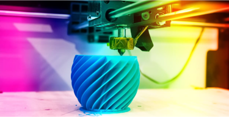
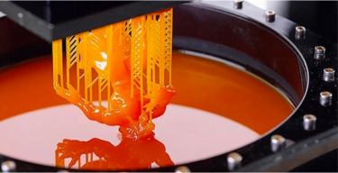
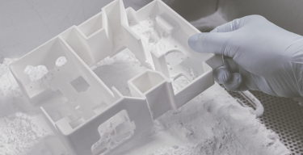

|  |
FDM (Fused Deposition Modeling) originally invented and patented by Stratasys founder Scott Crump in 1989. Fast forward to the present, FDM is now the most commonly used 3D printing process. |
|
Stereolithography (SLA or SL; also known as vat photopolymerisation, optical fabrication, photo-solidification, or resin printing) is a form of 3D printing technology used for creating models, prototypes, patterns, and production parts in a layer by layer fashion using photochemical processes by which light causes chemical monomers and oligomers to cross-link together to form polymers. |
 |
|  |
Selective laser sintering (SLS) is a 3D printing process that uses a laser to sinter small particles of powder — typically nylon — to form solid layers. Although the process is mostly used for prototyping, SLS production has increased in recent years, with applications in areas like aerospace, electronics, and consumer goods. |